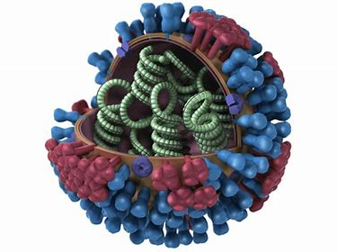
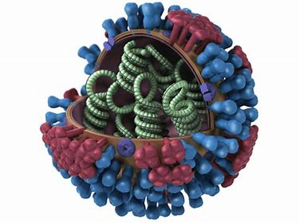

Bird flu
About
 



Bird flu is also known as avian flu or avian influenza.It is a disease that originated in China back in 1996.
This disease was initially detected among geese and was proven to be contagious and fatal.
It is an acute,infectious and viral disease that seemed to affect migrant and aquatic birds more than others,
but it appeared to be affecting livestock as well.This disease can last for several days or weeks.
It can be transmittable through direct contact.Some of its variants can be dangerous or life threatening.
Click the below link to check out the how bird flu is detected in humans
Detection of bird flu in humans
Click the below link to check out the risk factors of bird flu
Risk factors of bird flu
Click the below link to check out the symptoms of bird flu
Symptoms of bird flu
Click the below link to check out the vaccines for bird flu
Vaccines for bird flu
Click the below link to check out the preventions for bird flu
Preventions for bird flu